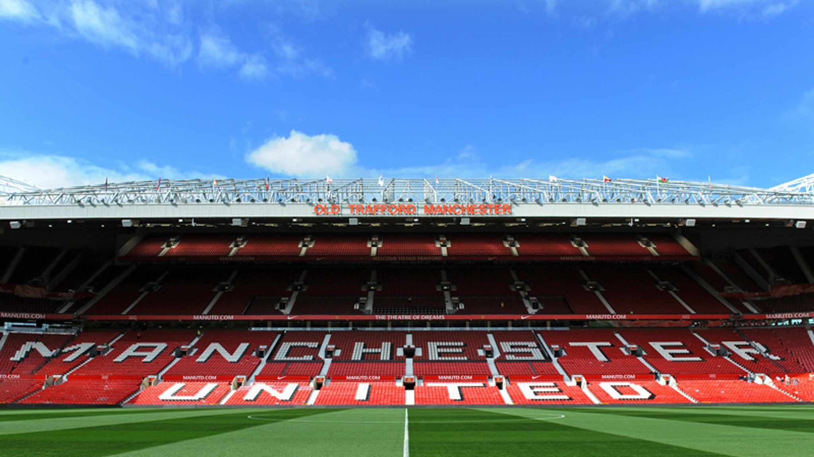
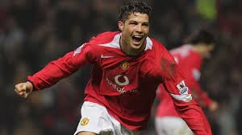

Pro Career – 2000s
Manchester United and the making of a superstar.
Joining Manchester United
In 2003, Ronaldo signed for Manchester United for £12 million. He was just 18 years old. Manager Sir Alex Ferguson gave him the famous Number 7 shirt.
Before Ronaldo, the Number 7 was worn by legends like George Best, Eric Cantona, and David Beckham.
Ronaldo made his United debut on August 16, 2003 against Bolton Wanderers and earned a standing ovation from the crowd.
Match Fact

Growing Better Every Year

Every season, Ronaldo got better. He worked very hard in training every day.
Season by Season
- 2003–04 — 6 goals, won FA Cup
- Great debut season
- Fans loved his skills
- 2004–05 — 9 goals
- 2005–06 — Won League Cup
- 2006–07 — 23 goals, won Premier League
- 2007–08 — 42 goals, won everything
The Best Season — 2007–08
This was Ronaldo's greatest season at United. He scored 42 goals in all games. He won the Champions League and his first Ballon d'Or.
| Season | Goals | Big Trophy |
|---|---|---|
| 2003–04 | 6 | FA Cup |
| 2006–07 | 23 | Premier League |
| 2007–08 | 42 | Champions League + Ballon d'Or |
| 2008–09 | 18 | Premier League |